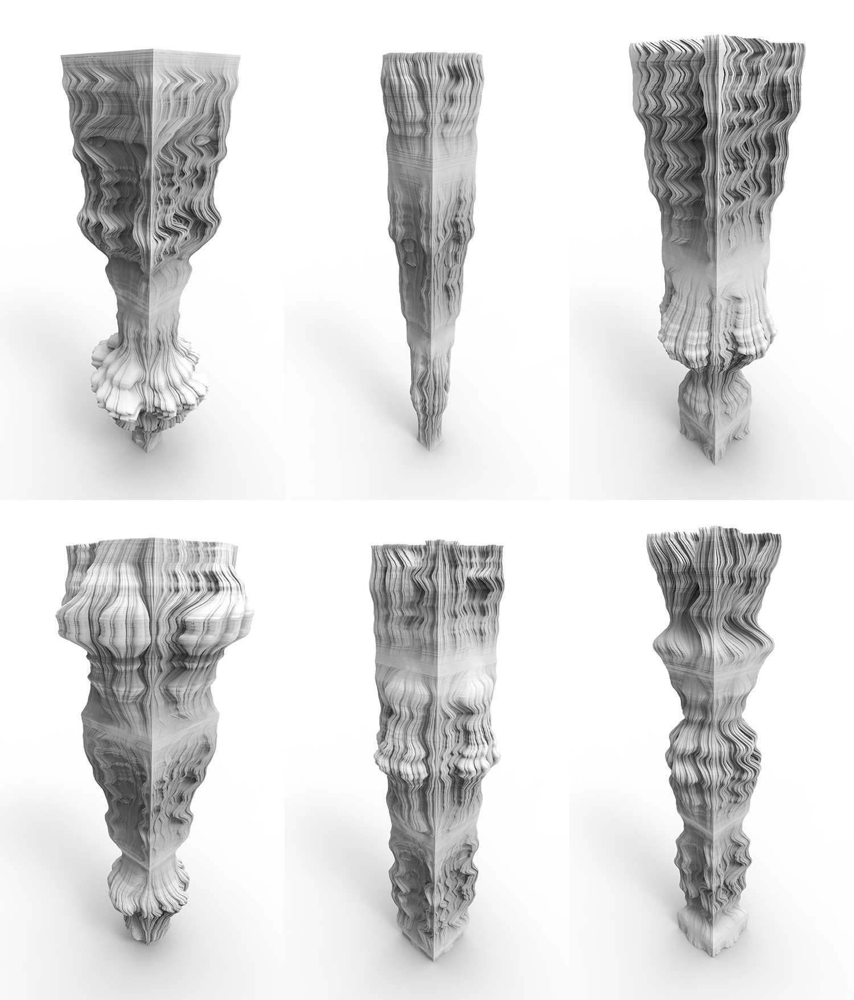
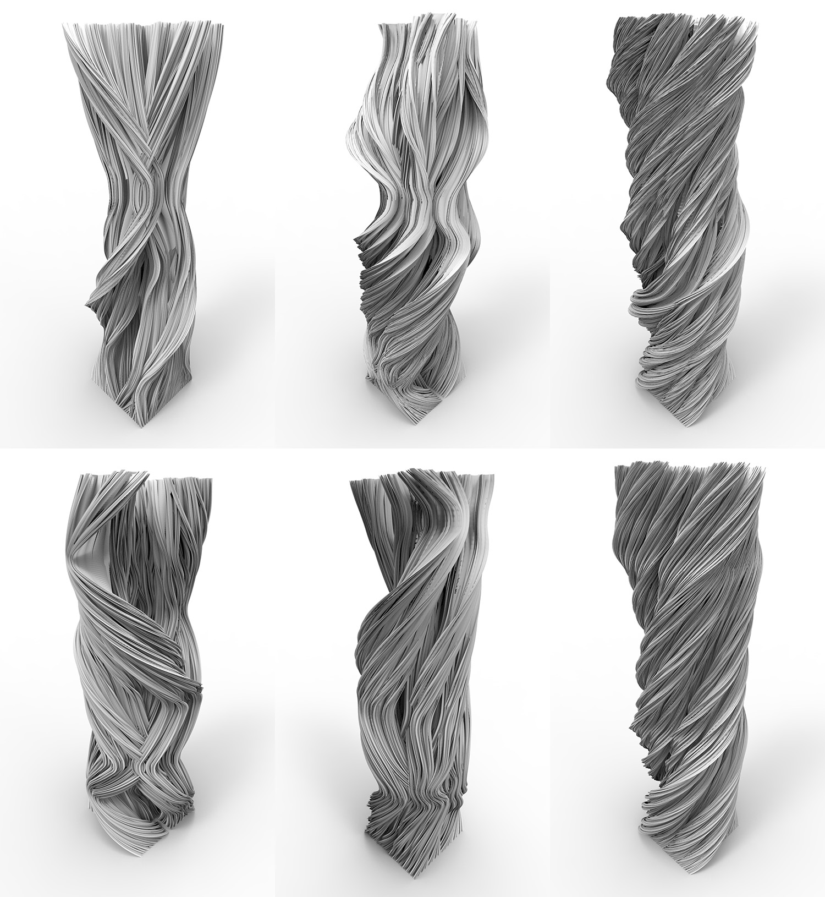

Subdivision Columns
Subdivision Columns explores the geometric complexitiy embedded in simple iterative shape replacement operations represented by Koch Curve and Pythagoras Tree. Subdivision Columns shows that a small change to the input parameters of these shape replacement operations can produce a huge variety of patterns to the final geometries. Subdivision Columns demonstrates this variety by stacking vertically the corresponding geometries of a series of smooth-changing input parameters. The result columns were materialized using 3D printing techniques.
-
Samples produced by Koch curves

Samples produced by L-system

-